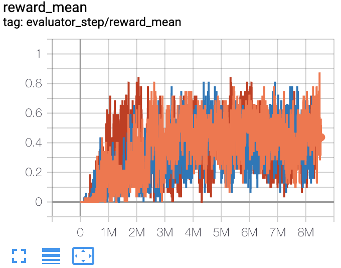
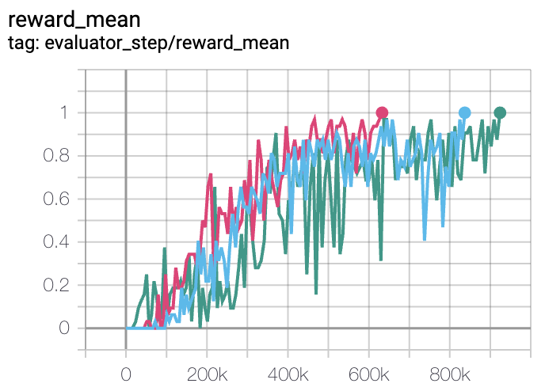
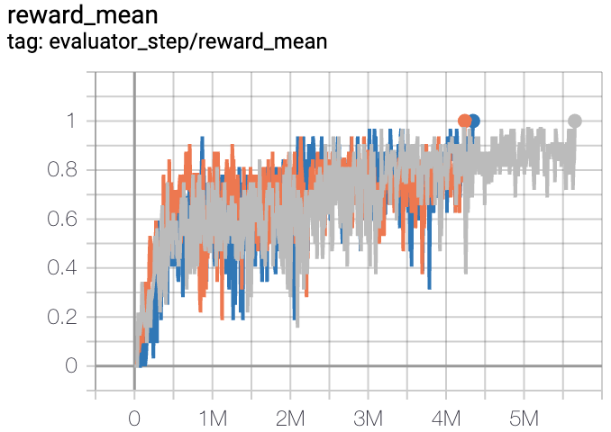

CollaQ¶
Overview¶
CollaQ (Zhang et al. 2020), Collaborative Q-learning, is a multi-agent collaboration approach based on Q-learning, which formulates multi-agent collaboration as a joint optimization problem on reward assignments. CollaQ decomposes decentralized Q value functions of individual agents into two terms, the self-term that only relies on the agent’s own state, and the interactive term that is related to states of nearby agents. CollaQ jointly trains using regular DQN, regulated with a Multi-Agent Reward Attribution (MARA) loss.
Quick Facts¶
CollaQ is a model-free and value-based multi-agent RL approach.
CollaQ only supports discrete action spaces.
CollaQ is an off-policy algorithm.
CollaQ considers a partially observable scenario in which each agent only obtains individual observations.
CollaQ uses DRQN architecture for individual Q learning.
Compared to QMIX and VDN, CollaQ doesn’t need a centralized Q function, which expands the individual Q-function for each agent with reward assignment depending on the joint state.
Key Equations or Key Graphs¶
The overall architecture of the Q-function with attention-based model in CollaQ:

The Q-function for agent i:
The overall training objective of standard DQN training with MARA loss:
Extensions¶
CollaQ can choose wether to use an attention-based architecture or not. Because the observation can be spatially large and covers agents whose states do not contribute much to a certain agent policy. In details, CollaQ uses a transformer architecture (stacking multiple layers of attention modules), which empirically helps improve the performance in multi-agent tasks.
Implementations¶
The default config is defined as follows:
- class ding.policy.collaq.CollaQPolicy(cfg: dict, model: Optional[Union[type, torch.nn.modules.module.Module]] = None, enable_field: Optional[List[str]] = None)[source]
- Overview:
Policy class of CollaQ algorithm. CollaQ is a multi-agent reinforcement learning algorithm
- Interface:
- _init_learn, _data_preprocess_learn, _forward_learn, _reset_learn, _state_dict_learn, _load_state_dict_learn
_init_collect, _forward_collect, _reset_collect, _process_transition, _init_eval, _forward_eval_reset_eval, _get_train_sample, default_model
- Config:
ID
Symbol
Type
Default Value
Description
Other(Shape)
1
typestr
collaq
POLICY_REGISTRY2
cudabool
True
3
on_policybool
False
prioritybool
False
5
priority_IS_weightbool
False
6
learn.update_per_collectint
20
7
learn.target_update_thetafloat
0.001
8
learn.discount_factorfloat
0.99
9
learn.collaq_loss_weightfloat
1.0
The network interface CollaQ used is defined as follows:
- class ding.model.template.qmix.CollaQ(agent_num: int, obs_shape: int, alone_obs_shape: int, global_obs_shape: int, action_shape: int, hidden_size_list: list, attention: bool = False, self_feature_range: Optional[List[int]] = None, ally_feature_range: Optional[List[int]] = None, attention_size: int = 32, mixer: bool = True, lstm_type: str = 'gru', dueling: bool = False)[source]
- Overview:
CollaQ network
- Interface:
__init__, forward, _setup_global_encoder
- forward(data: dict, single_step: bool = True) dict[source]
- Overview:
forward computation graph of collaQ network
- Arguments:
- data (
dict): input data dict with keys [‘obs’, ‘prev_state’, ‘action’]
agent_state (
torch.Tensor): each agent local state(obs)agent_alone_state (
torch.Tensor): each agent’s local state alone, in smac setting is without ally feature(obs_along)global_state (
torch.Tensor): global state(obs)prev_state (
list): previous rnn state, should include 3 parts: one hidden state of q_network, and two hidden state if q_alone_network for obs and obs_alone inputsaction (
torch.Tensoror None): if action is None, use argmax q_value index as action to calculateagent_q_actsingle_step (
bool): whether single_step forward, if so, add timestep dim before forward and remove it after forward- Return:
- ret (
dict): output data dict with keys [‘total_q’, ‘logit’, ‘next_state’]
total_q (
torch.Tensor): total q_value, which is the result of mixer networkagent_q (
torch.Tensor): each agent q_valuenext_state (
list): next rnn state- Shapes:
agent_state (
torch.Tensor): \((T, B, A, N)\), where T is timestep, B is batch_size A is agent_num, N is obs_shapeglobal_state (
torch.Tensor): \((T, B, M)\), where M is global_obs_shapeprev_state (
list): math:(B, A), a list of length B, and each element is a list of length Aaction (
torch.Tensor): \((T, B, A)\)total_q (
torch.Tensor): \((T, B)\)agent_q (
torch.Tensor): \((T, B, A, P)\), where P is action_shapenext_state (
list): math:(B, A), a list of length B, and each element is a list of length A
The Benchmark result of CollaQ in SMAC (Samvelyan et al. 2019), for StarCraft micromanagement problems, implemented in DI-engine is shown.
Benchmark¶
Environment |
Best mean reward |
Evaluation results |
Config link |
Comparison |
|---|---|---|---|---|
5m6m |
1 |
 | Pymarl(0.8) |
|
MMM |
0.7 |
 | Pymarl(1) |
|
3s5z |
1 |
 | Pymarl(1) |
P.S.：
The above results are obtained by running the same configuration on three different random seeds (0, 1, 2).
References¶
Tianjun Zhang, Huazhe Xu, Xiaolong Wang, Yi Wu, Kurt Keutzer, Joseph E. Gonzalez, Yuandong Tian. Multi-Agent Collaboration via Reward Attribution Decomposition. arXiv preprint arXiv:2010.08531, 2020.
Mikayel Samvelyan, Tabish Rashid, Christian Schroeder de Witt, Gregory Farquhar, Nantas Nardelli, Tim G. J. Rudner, Chia-Man Hung, Philip H. S. Torr, Jakob Foerster, Shimon Whiteson. The StarCraft Multi-Agent Challenge. arXiv preprint arXiv:1902.04043, 2019.